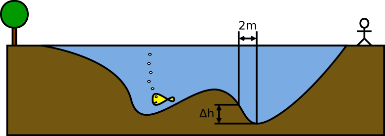

Szendvicsek
Egy büfében az alábbi szabályokat használják a jó szendvicsek készítéséhez:
- Egy szendvicsben legyen legalább egy fajta hús,
- Egy szendvicsben legyen marha vagy sonka, de együtt ne,
- Ha a szendvicsben van pulykahús, akkor legyen benne sajt is.
Írj C logikai kifejezést, amely a jó szendvicseknél értékelődik ki igaz
értékre, amúgy pedig hamisra! A változók: sajt, ha van benne sajt,
pulyka, ha van benne pulyka, marha és sonka.
Megoldás
Az egyes szabályok megfelelői:
marha || sonka || pulyka,(marha && !sonka) || (!marha && sonka), ami egyébkéntmarha ⊕ sonkaXOR kapcsolatnak felel meg,!pulyka || sajt, mert ha nincs bennepulyka, akkor mindegy, van-e sajt, viszont ha van bennepulyka(tehát!pulykahamis), akkor muszáj lennie benne sajtnak.
Tehát a végleges szabály:
(marha || sonka || pulyka) && ((marha && !sonka) || (!marha && sonka)) && (!pulyka || sajt)
Almás pite
Egy almás pite receptben az alábbi útmutatásokat találjuk:
- Ne használjunk egyszerre szegfűborsot és szerecsendiót,
- akkor és csak akkor használjunk szerecsendiót, ha a pitébe tettünk fahéjat.
Írj fel egy C logikai kifejezést a szegfubors, szerecsendio
és fahej változókkal, amely akkor értékelődik ki igazra, ha a recept
utasításait a készítő betartotta!
Töltsd ki egy igazságtáblát is, amely külön mutatja, hogy az első, illetve a második útmutatás teljesül-e egy adott fűszerkombinációra! Ellenőrizd a tábla alapján a kifejezéseid!
Megoldás
Az egyes szabályok:
!(szegfubors && szerecsendio), ez épp akkor lesz hamis, ha mindkét változó igaz (ha egyszerre használnánk őket),(szerecsendio && fahej) || (!szerecsendio && !fahej), mert az is jó, ha mindkettő van, és az is, ha egyik sem: „akkor és csak akkor”.
A végleges szabály:
!(szegfubors && szerecsendio) && ((szerecsendio && fahej) || (!szerecsendio && !fahej))
Pizzák
Alex, Beth és Chris szeretnének egy óriáspizzát rendelni, méghozzá olyat, amelyből mind a hárman szívesen esznek. Ezeket a kijelentéseket tehetjük:
- Alex az olivabogyós pizzát csak akkor eszi meg, ha pepperoni is van rajta,
- Beth viszont a pepperonis pizzát csak sonka nélkül eszi meg,
- Chris pedig csak olyan pizzát hajlandó enni, amin pontosan kétféle feltét van.
Használd a következő változókat: p IGAZ értékű, ha a pizzán van
pepperoni, s akkor IGAZ, ha van rajta sonka és o akkor IGAZ, ha van rajta
olivabogyó! Írj egy C logikai kifejezést, amely akkor és csak akkor igaz, ha a pizza mindhármuk
számára megfelelő! Rajzold fel az igazságtáblát, amely külön mutatja mindhármuk preferenciáit,
és egy oszlopban azt is, hogy az adott pizza megfelelő-e! Meg tudnak egyezni? Lehet egyszerűsíteni
a felírt képletet?
Megoldás
Alex: (!o && !p) || (o && p),
Beth: p && !s,
Chris: (p && s && !o) || (p && !s && o) || (!p && s && o).
Kombinálva: ((!o && !p) || (o && p)) && (p && !s) &&
((p && s && !o) || (p && !s && o) || (!p && s && o)).
Egyszerűsítve (az igazságtábla alapján is ellenőrizhető): p && !s && o.
| p | s | o | Alex | Beth | Chris | mindenki |
|---|---|---|---|---|---|---|
| 0 | 0 | 0 | 1 | 0 | 0 | 0 |
| 0 | 0 | 1 | 0 | 0 | 0 | 0 |
| 0 | 1 | 0 | 1 | 0 | 0 | 0 |
| 0 | 1 | 1 | 0 | 0 | 1 | 0 |
| 1 | 0 | 0 | 0 | 1 | 0 | 0 |
| 1 | 0 | 1 | 1 | 1 | 1 | 1 |
| 1 | 1 | 0 | 0 | 0 | 1 | 0 |
| 1 | 1 | 1 | 1 | 0 | 0 | 0 |
Büfé
Egy büfé négy törzsvásárlója az alábbi fajta szendvicseket szereti:
- Az 1. vásárló olyan szendvicset szeret, amiben bacon magában van.
- A 2. vásárló szerint a paradicsomos szendvics csak akkor jó, ha van benne salátalevél is.
- A 3. vásárló nem szereti, ha bacon és salátalevél is van egyszerre a szendvicsben.
- A 4. vásárló csak az olyan szendvicset (v)eszi meg, amiben se paradicsom, se salátalevél nincsen.
Írj fel mind a négy vásárlóhoz egy-egy logikai kifejezést, amelyek akkor és csak akkor igazak, ha egy adott típusú szendvics megfelelő nekik!
Megoldás
A preferenciák logikai kifejezéssel:
- 1. vásárló:
bacon && !salata && !paradicsom, mert nem elég csak azt mondani, hogy legyen bennebacon, azt is kell mondani, hogy a másik két összetevő nincs. - 2. vásárló:
!paradicsom || salata, mert ha vanparadicsom, a kifejezés első fele hamis lesz, ilyenkor a második fele:salatamuszáj igaz legyen, hogy az egész igaz tudjon lenni; ha pedig nincsparadicsom, az első fele mindenképp igaz, tehát lehet bennesalata, de az se baj, ha nincs. - 3. vásárló:
!(bacon && salata), mert ha mindkettő van, a belső részkifejezés igaz lesz, és pont azt nem szereti, tehát tagadjuk. - 4. vásárló:
!paradicsom && !salata, mert egyik sem teljesülhet.
Wason feladatai
1. feladat. Tegyük fel, hogy vannak kártyáink, amelyeknek egyik oldalán egy alakzat van, másikon pedig egy szám. Adott egy szabály:
Ha egy kártyának négyzet van az egyik oldalán, páratlan szám kell legyen a másik oldalán.
Ezek állítólag érvényesek az oldalt látható kártyákra. Melyeket kell
megfordítani ahhoz, hogy ellenőrizzük a szabályt? Ha a negyzet változó és a paros
változó igaz/hamis értékeket tárolnak, amelyek azt mutatják, egy adott kártyán négyzet, illetve páros
szám van-e, akkor mi az a logikai kifejezés, amely igazra értékelődik ki, ha egy kártya megfelel
a szabálynak?
2. feladat. Egy országban legalább 18 évesnek kell lennie valakinek ahhoz, hogy sört ihasson. Egy rendőr az alábbiakat tudja egy bár négy különböző vendégéről:
- Sört iszik.
- Kólát iszik.
- 25 éves.
- 16 éves.
Melyikükről kell több információt szereznie, hogy tudja, betartja-e a törvényt?
Megoldás
1. feladat. Meg kell fordítani a négyzetest, mert ha nem páratlan számot találunk a másik oldalán, akkor az
megsérti a szabályt. Meg kell fordítani a hatost is, mert ha négyzet van a másik oldalán, a páros
számával sérti a szabályt. A logikai kifejezés pedig !negyzet || paros.
2. feladat. A sört ivóról és a 16 évesről.
- A sört ivóról tudnia kell, elmúlt-e 18.
- Aki kólát iszik, bárhány éves lehet, nem szegi meg a tilalmat.
- Aki 25 éves, bármit ihat.
- Aki 16 éves, nem ihat sört – róla tudnia kell, mit iszik.
A két feladat matematikailag tökéletesen egyforma. Egyformák lettek a megoldásaid is?
Osztható-e
Készíts programot, mely a felhasználótól bekért két számról megállapítja, hogy oszthatók-e egymással!
Háromszög
Készíts programot, amely a felhasználó által megadott a, b és c háromszög oldalhosszúságok ismeretében a.) eldönti, hogy létezik-e a háromszög, b.) meghatározza, hogy ha létezik a háromszög, az derékszögű, hegyesszögű vagy tompaszögű. (A Pitagorasz-tétel alapján ez eldönthető.)
Kisebb, nagyobb, egyenlő
Készíts programot, mely három változó (a,b,c) értékét a felhasználótól megkérdezi, majd a számok közötti relációt kiírja a képernyőre. Természetesen előfordulhat egyenlőség is. Lehetséges példák eredményre: "b<c<a", "c<a=b", "a=b=c", stb.
Karakter típusa
Készíts programot, mely beolvas egy karaktert, és megállapítja róla, hogy az nagybetű, kisbetű, szám vagy egyéb karakter!
A Caesar-féle kódolás
Készíts egy programot, amelyik egy beírt szöveget titkosít. A titkosítás egyszerű: minden betű helyett az ábécében következőt használjuk, z helyett pedig a-t.
Megoldás
#include <stdio.h>
int main(void) {
char c;
/* egyesevel a karakterek */
while (scanf("%c", &c)==1) {
/* ez a ketto specialis, mert "tulpordul" */
if (c=='z') {
c = 'a';
}
else if (c=='Z') {
c = 'A';
}
else {
/* tovabbi kodolando betuk: a..z és A..Z. C-ben:
HA (if) a) a és z kozott van VAGY (||) b) A es Z kozott van */
if ((c>='a' && c<'z') || (c>='A' && c<'Z'))
c = c+1;
/* tobbi valtozatlanul marad. */
}
printf("%c", c);
}
return 0;
}Karaktertábla
Az előadásanyagban szerepel egy táblázat az ASCII karakterkódokkal. A feladat egy olyan programot írni, amely kirajzolja azt, fejlécekkel együtt. (Miért csak 32-től 127-ig kell menni?)
Madárnyelv: teve tuvudsz ívígy beveszévélnivi?
Olvass be karakterenként egy szöveget! Írd ki úgy, hogy minden magánhangzó után a program mondjon egy v-t is, és ismételje meg a magánhangzót. Pl. te→teve, ma→mava, labor→lavabovor. Elég csak az ékezet nélküli kisbetűkkel foglalkozni: a, e, i, o, u.
Megoldás
#include <stdio.h>
int main(void) {
char betu;
while (scanf("%c", &betu)==1) {
printf("%c", betu);
/* Ha magánhangzó */
if (betu=='a'||betu=='e'||betu=='i'||betu=='o'||betu=='u')
printf("v%c", betu); /* Írunk egy v-t és újból a karaktert */
}
return 0;
}Dolgozat pontszáma
0…23 → 1 24…32 → 2 33…41 → 3 42…50 → 4 51…60 → 5
Írj programot, amely megkérdezi, hány pontot kapott valaki egy dolgozatra. Utána pedig kiírja az érdemjegyet (elégtelen, elégséges, közepes, jó, jeles) szavakkal a képernyőre! A pontozási táblázat oldalt látható.
Vigyázz: C-ben nem használhatsz 0≤x≤23 formájú kifejezést a
tartomány vizsgálatához!
Megoldás
Sokféle megoldás lehet, hiszen az egyes feltételek megfogalmazhatóak úgy is, hogy egymást kizárják. Az egyik lehetséges változat, amely képes az érvénytelen pontszámot is jelezni:
#include <stdio.h>
int main(void) {
int pont;
printf("Hany pontos a dolgozat? ");
scanf("%d", &pont);
if (pont>=0 && pont<=23)
printf("Elegtelen");
if (pont>=24 && pont<=32)
printf("Elegseges");
if (pont>=33 && pont<=41)
printf("Kozepes");
if (pont>=42 && pont<=50)
printf("Jo");
if (pont>=51 && pont<=60)
printf("Jeles");
if (pont<0 || pont>60) /* itt || kell! */
printf("Ervenytelen pontszam");
return 0;
}Euler feladata
Egy gazda sertést, kecskét és juhot vásárolt, összesen 100 állatot, pontosan 600 aranyért. A sertés darabja 21 arany, a kecskéé 8 arany, a juhoké 3 arany. Hány darabot vett mindegyik állatból? Oldd meg nyers erővel (azaz a lehetséges esetek végigpróbálásával) a feladatot!
Oszthatóság
Készíts programot, mely meghatározza és kiírja az összes hárommal és öttel egyaránt osztható, 1000-nél kisebb természetes számot.
Fizzbuzz 1.
Írj programot, amely a fizz-buzz játékot játssza! Ez a számokat növekvő sorrendben írja ki; de minden 3-mal osztható helyére azt, hogy „fizz”, az 5-tel oszthatók helyére pedig azt, hogy „buzz”. Ha mindkét feltétel teljesül, akkor a kiírandó szöveg „fizzbuzz”.
Hogy lehetne megírni ezt a programot röviden, ha a 7-eseknél „banana”, és 11-eseknél „bumm” van a fentihez hasonló módon?
Fizzbuzz 2.
Az előző program kapcsán vizsgálni kellett egy szám 3-mal és 5-tel való oszthatóságát. Egy szám lehet 3-mal osztható (vagy nem), lehet 5-tel osztható (vagy nem). Ez két, egymástól független tulajdonság. Mondhatjuk így is: ha egy szám 3-mal osztható, akkor azon belül még lehet 5-tel is osztható, vagy nem. Ha pedig 3-mal nem osztható, akkor azon belül is lehet még 5-tel osztható, vagy nem.
Írj egy olyan Fizzbuzz programot, amelynek felépítése ezt a logikát követi!
Megoldás
#include <stdio.h>
#include <stdbool.h>
int main(void) {
for (int szam = 1; szam <= 20; szam += 1) {
bool harommal = szam%3 == 0;
bool ottel = szam%5 == 0;
if (harommal) {
if (ottel)
printf("fizzbuzz\n");
else
printf("fizz\n");
} else {
if (ottel)
printf("buzz\n");
else
printf("%d\n", szam);
}
}
return 0;
}Visszafelé
Készíts programot, mely a felhasználótól beolvasott természetes számot visszafele írja ki. Például 651-re a válasz: 156.
Az ötjegyű számok osztója
Készíts programot, mely meghatározza az összes olyan legfeljebb ötjegyű természetes számot, amelynek első két jegyéből alkotott szám osztója az eredeti számnak!
Gyors hatványozás
A hatványozás az egyszerű ciklusnál gyorsabban is elvégezhető, mivel az x8=x4·x4, x4=x2·x2 és
x2=x·x stb. miatt például a nyolcadikra hatványozáshoz mindössze három szorzásra van szükség.
A következő megfigyelést tehetjük:
xn=(x2)n/2, hanpáros, ésxn=x·xn-1, hanpáratlan.
Írj ciklust, amely a fentiek alapján végzi el a hatványozást!
Tipp
Az nem baj, ha az alapot tároló változó értéke elveszik. Ha a kitevő páros, éppen azt kell négyzetre emelni.
Megoldás
#include <stdio.h>
int main(void) {
for (int i = 0; i < 16; i += 1) {
double alap = 2;
double hatvany;
int kitevo = i;
hatvany = 1;
while (kitevo > 0) {
if (kitevo % 2 == 1) {
hatvany = hatvany * alap;
kitevo--;
} else {
alap = alap * alap;
kitevo/=2;
}
}
printf("%g\n", hatvany);
}
return 0;
}Legnagyobb közös osztó
300│2 150│2 75│3 25│5 5│5 1│
Emlékezz vissza a gyakorlat feladatára, a prímtényezős felbontásra. Egy adott osztóval addig osztunk, amíg csak lehet; utána a következő osztót próbáljuk. Mindezt pedig addig folytatjuk, amíg 1-ig el nem érünk, mert az már nem osztható semmivel.
Tervezz programot két pozitív egész legnagyobb közös
osztójának (LNKO) meghatározására! Gondold végig, hogyan lehet
a sima prímtényezős felbontásból kiindulni. (Egy tényező akkor
szerepel a közös osztó felbontásában, ha mindkettő számnak
tényezője.) A tervezéshez pszeudokódot, folyamatábrát vagy
struktogramot használj! Valósítsd meg a programot C nyelven!
Megoldás
#include <stdio.h>
int main(void) {
int szam1, szam2;
printf("Egyik szam? ");
scanf("%d", &szam1);
printf("Masik szam? ");
scanf("%d", &szam2);
int lnko = 1; /* ez mindennek osztoja :) */
int oszto = 2; /* legkisebb szam, amivel osztunk */
while (szam1 > 1 && szam2 > 1) {
/* amig mindkettonek osztoja */
while (szam1%oszto==0 && szam2%oszto==0) {
/* addig ez tenyezo, felszorozzuk */
lnko *= oszto;
szam1 /= oszto;
szam2 /= oszto;
}
/* ha kijottunk a fenti ciklusbol, valamelyiknek
nem osztoja mar. mindegy, melyiknek; a masikat
osztogassuk le. a ket ciklus kozul az egyik
olyan lesz, amibe egyszer sem megy be! */
while (szam1 % oszto == 0)
szam1 /= oszto;
while (szam2 % oszto == 0)
szam2 /= oszto;
oszto += 1;
}
printf("LNKO: %d\n", lnko);
return 0;
}
Legkisebb közös többszörös
Írd át úgy a fenti programot, hogy a legkisebb közös többszörösét (LKKT) számolja ki a két megadott számnak! Gondold meg: mikor tényezője a közös többszörösnek egy prímszám?
Megoldás
#include <stdio.h>
int main(void) {
/* a ket szamot kerjuk a felhasznalotol */
int a, b;
printf("a="); scanf("%d", &a);
printf("b="); scanf("%d", &b);
int oszto = 2;
int lkkt = 1;
/* amig valamelyik meg nem egy */
while (a>1 || b>1) {
/* ha mindkettonek osztoja, felszorozzuk */
while (a%oszto==0 && b%oszto==0) {
lkkt *= oszto;
a /= oszto;
b /= oszto;
}
/* ha valamelyiknek osztoja, akkor is felszorozzuk */
while (a%oszto==0) {
lkkt *= oszto;
a /= oszto;
}
while (b%oszto==0) {
lkkt *= oszto;
b /= oszto;
}
oszto += 1;
}
printf("LKKT: %d\n", lkkt);
return 0;
}Törtek összege
Készíts programot, amely kiszámolja a/b+c/d (két tört összegét), majd az eredményt törzsalakú törté alakítja (amely már nem egyszerűsíthető tovább)!
Láda
+---+ |\ | | \ | | \| +---+
Írj programot, amely +, |, -, és \ karakterekből egy ládát rajzol! Figyelj a
visszaper karakter kirajzolására: azt "\\" formában kell megadni. Hogyan lehetne
ezt megírni két egymásba ágyazott ciklussal és sok elágazással?
Megoldás
#include <stdio.h>
int main(void) {
/* Méret beolvasása */
int meret;
printf("Mekkora legyen? ");
scanf("%d", &meret);
printf("lada atloval, csak 2 ciklus\n");
for (int y = 1; y <= meret; y += 1) {
for (int x = 1; x <= meret; x += 1)
/* Feltétel a 4 sarokpontra */
if ((x==1 && (y==1 || y==meret)) || (x==meret && (y==1 || y==meret)))
printf("+");
else
/* Feltétel a vízszintes oldalakra */
if (y==1 || y==meret)
printf("-");
else
/* Feltétel a függőleges oldalakra */
if (x==1 || x==meret)
printf("|");
else
/* Feltétel az átlóra */
if (x==y)
printf("\\"); /* A backslash spec. jelentése miatt duplán kell írni */
else
printf(" ");
printf("\n");
}
return 0;
}Lépés a sakktáblán I.
Használd a sakktáblán a szokásos jelölést; Amikor karaktert kell beolvasni, a feladattól függően érdemes a 1…8 a sorok, a…h az oszlopok jele. Adott
két mező, pl. b7 és d6; kérd ezeket a felhasználótól! Mondd meg ezután, ez a lépés
szabályos-e egy király, vezér, futó, bástya vagy huszár számára! (Tegyük fel, hogy nem
áll más figura az útjukban.)
Tipp
scanf()-et
scanf("%c", &betu) helyett scanf(" %c", &betu) formában használni,
azaz tenni egy szóközt a %c elé. Ennek hatására a scanf() eldobja a
kapott szóköz és újsor (enter) karaktereket, és megvárja az első nem szóközt. Erre azért van
szükség, mert karakterek beolvasásánál alapértelmezés szerint megkapjuk a felhasználó által
leütött entereket is.Megoldás
#include <stdio.h>
#include <stdlib.h>
int main(void) {
/* a két mező koordinátája */
char o1, s1, o2, s2;
/* megkérdezzük a felhasználót. */
/* a scanf-nél a szóközök elnyelik a whitespace karaktereket. */
printf("Írd be az első mezőt, pl. d6!\n? ");
scanf(" %c %c", &o1, &s1);
printf("Írd be a második mezőt, pl. f8!\n? ");
scanf(" %c %c", &o2, &s2);
/* a betűkre karakterként (számként) tekintek.
* mivel ábécé sorban vannak, a számjegyek pedig növekvő
* sorrendben, ezért kisebb/nagyobb összehasonlítást
* végezhetek, és kivonhatom őket egymásból. */
if (o1<'a' || o1>'h' || s1<'0' || s1>'8'
|| o2<'a' || o2>'h' || s2<'0' || s2>'8') {
printf("Hibás sor- vagy oszlopmegadás!\n");
} else {
/* kivételes eset mindegyik figuránál, ha nem
* lépett sehova (o1==o2 és s1==s2), hiszen az
* nem is lépés. itt azért szerepel mindegyik
* kifejezésben, hogy önmagukban is egészt
* alkossanak. */
/* a király egyet léphet valamelyik irányba. ez
* azt jelenti, hogy a sor- és az oszlopugrás
* távolságának abszolút értéke maximum egy. */
if (abs(o1-o2)<=1 && abs(s1-s2)<=1 && !(o1==o2 && s1==s2)) {
printf("Ez szabályos a király számára.\n");
}
/* a bástyánál az oszlop- vagy a sor változatlan.
* de mindkettő nem lehet ugyanaz. */
if ((o1==o2 || s1==s2) && !(o1==o2 && s1==s2)) {
printf("Egy bástya léphet így.\n");
}
/* a futónál mindkét irányba ugyanannyit kell
* mozdulni, úgy jön ki az átlós lépés. */
if (abs(o1-o2)==abs(s1-s2) && !(o1==o2 && s1==s2)) {
printf("Egy futó számára ez helyes lépés lehet.\n");
}
/* a királynő mint a bástya és a futó együtt. */
if (((o1==o2 || s1==s2) || abs(o1-o2)==abs(s1-s2))
&& !(o1==o2 && s1==s2)) {
printf("A vezér léphet ilyet.\n");
}
/* a huszár nehéznek tűnik, de nem az. az L alak
* azt jelenti, hogy a vízszintes elmozdulás 1,
* a függőleges 2, vagy fordítva. */
if ((abs(o1-o2)==2 && abs(s1-s2)==1)
|| (abs(o1-o2)==1 && abs(s1-s2)==2)) {
printf("Huszár számára szabályos.\n");
}
}
return 0;
}
Lépés a sakktáblán II.
A feladat mint az előző, de most csak egy mezőt ad a felhasználó (pl. d6).
Listázd ki a programból, melyekre tud lépni szabályosan arról egy király, egy vezér stb.
Páratlan számok
Egy program bekér a felhasználótól két pozitív egész számot, és kiírja a két szám közötti összes páratlan számot. A program akkor is helyesen működik, ha a felhasználó előbb a felső, aztán az alsó határt adja meg (és fordítva is).
Add meg az algoritmus pszeudokódját, és készítsd el a programot C nyelven! A program kötelezően a pszeudokódot valósítsa meg!
Megoldás
Első és második szám bekérése
Ha első > második
alsó = második, felső = első
Egyébként
alsó = első, felső = második
A ciklusváltozó legyen alsó
Amíg a ciklusváltozó kisebb vagy egyenlő a felsővel
Ha a ciklusváltozó páratlan
Írd ki a ciklusváltozót
Növeld a ciklusváltozót eggyel
#include <stdio.h>
int main(void) {
int elso, masodik;
printf("Elso = "); scanf("%d", &elso);
printf("Masodik = "); scanf("%d", &masodik);
int also, felso;
if (elso > masodik) { also = masodik; felso = elso; }
else { also = elso; felso = masodik; }
for (int i = also; i <= felso; i = i + 1)
if (i % 2 == 1)
printf("%d ",i);
return 0;
}Annyi csillag, ahány…
Egy program bekér a felhasználótól két pozitív egész számot, és kiszámítja a két szám közötti összes 5-tel osztható páros szám összegét, majd ennyi * karaktert ír a képernyőre. A program akkor is helyesen működik, ha a felhasználó előbb a felső, aztán az alsó határt adja meg (és fordítva is).
Add meg az algoritmus pszeudokódját, és készítsd el a programot C nyelven! A program kötelezően a pszeudokódot valósítsa meg!
Megoldás
Első és második szám bekérése
Ha első > második
alsó = második, felső = első
Egyébként
alsó = első, felső = második
Összeg = 0, ciklusváltozó = alsó
Amíg ciklusváltozó kisebb, mint felső
Ha ciklusváltozó osztható 10-zel
Összeget növeld ciklusváltozóval
növeld ciklusváltozót eggyel
Ciklusváltozó = 0
Amíg ciklusváltozó < összeg
írj ki egy csillagot
ciklusváltozót növeld eggyel
#include <stdio.h>
int main(void) {
int elso, masodik;
printf("Elso = "); scanf("%d", &elso);
printf("Masodik = "); scanf("%d", &masodik);
int also, felso;
if (elso > masodik) { also = masodik; felso = elso; }
else { also = elso; felso = masodik; }
int sum = 0;
for (int i = also; i <= felso; i += 1)
if (i % 10 == 0)
sum += i;
for (int i = 0; i < sum; i += 1)
printf("*");
return 0;
}Hárommal oszthatók, de öttel nem
Egy program bekér a felhasználótól két pozitív egész számot, és megszámolja, hogy a két szám között hány 3-mal osztható, de 5-tel nem osztható szám áll, végül kiírja a darabszámot. A program akkor is helyesen működik, ha a felhasználó előbb a felső, aztán az alsó határt adja meg (és fordítva is).
Add meg az algoritmus pszeudokódját, és készítsd el a programot C nyelven! A program kötelezően a pszeudokódot valósítsa meg!
Megoldás
Első és második szám bekérése
Ha első > második
alsó = második, felső = első
Egyébként
alsó = első, felső = második
Darabszám = 0, ciklusváltozó = alsó
Amíg ciklusváltozó kisebb, mint felső
Ha alsó osztható hárommal, de nem osztható öttel
Darabszám növelése eggyel
Alsó növelése eggyel
#include <stdio.h>
int main(void) {
int elso, masodik;
printf("Elso = "); scanf("%d", &elso);
printf("Masodik = "); scanf("%d", &masodik);
int also, felso;
if (elso > masodik) { also = masodik; felso = elso; }
else { also = elso; felso = masodik; }
int darab = 0;
for (int i = also; i <= felso; i = i + 1)
if (i%3 == 0 && i%5 != 0)
darab += 1;
printf("%d ", darab);
return 0;
}Sakktáblák
Írj programot, mely kirajzol n darab egymást részben (rétegesen) fedő sakktáblát! Bemenő paraméterek:
- a sakktáblák száma
- egy mező mérete (pl. 3 = minden mező 3x3 karakter)
- a sakktábla sorainak/oszlopainak száma (pl. 8 = "rendes" sakktábla)
- x eltolás: ennyivel van minden sakktábla eltolva vízszintesen az előzőhöz képest
- y eltolás: ugyanaz, csak függőleges irányban
A mezők az abc betűi, a legalsó (bal felső sarokban levő tábla) fekete/fehér mezői a és A; a következő, ezt részben fedő tábla mezői b és B, stb. Figyelem:
- A kurzort csak a kiírás mozgatja, nem lehet mágikus módon a már kiírt szövegre visszahelyezni! (Tehát "printeren is működnie kell a programnak" :)
- Nem lehet a memóriában "bufferelni" (pl. a kép egy sorát, vagy az egész képet "festő" algoritmussal kiszámolni).
- Az eltolások akkorák is lehetnek, hogy a sakktáblák nem fedik egymást.
AAAaaaAAAaaaAAAaaaAAAaaa
AAAaaaAAAaaaAAAaaaAAAaaa
AAAaaBBBbbbBBBbbbBBBbbbBBBbbb
aaaAABBBbbbBBBbbbBBBbbbBBBbbb
aaaAABBBbbCCCcccCCCcccCCCcccCCCccc
aaaAAbbbBBCCCcccCCCcccCCCcccCCCccc
AAAaabbbBBCCCccDDDdddDDDdddDDDdddDDDddd
AAAaabbbBBcccCCDDDdddDDDdddDDDdddDDDddd
AAAaaBBBbbcccCCDDDddEEEeeeEEEeeeEEEeeeEEEeee
aaaAABBBbbcccCCdddDDEEEeeeEEEeeeEEEeeeEEEeee
aaaAABBBbbCCCccdddDDEEEeeeEEEeeeEEEeeeEEEeee
aaaAAbbbBBCCCccdddDDeeeEEEeeeEEEeeeEEEeeeEEE
AAAaabbbBBCCCccDDDddeeeEEEeeeEEEeeeEEEeeeEEE
AAAaabbbBBcccCCDDDddeeeEEEeeeEEEeeeEEEeeeEEE
AAAaaBBBbbcccCCDDDddEEEeeeEEEeeeEEEeeeEEEeee
aaaAABBBbbcccCCdddDDEEEeeeEEEeeeEEEeeeEEEeee
aaaAABBBbbCCCccdddDDEEEeeeEEEeeeEEEeeeEEEeee
aaaAAbbbBBCCCccdddDDeeeEEEeeeEEEeeeEEEeeeEEE
AAAaabbbBBCCCccDDDddeeeEEEeeeEEEeeeEEEeeeEEE
AAAaabbbBBcccCCDDDddeeeEEEeeeEEEeeeEEEeeeEEE
AAAaaBBBbbcccCCDDDddEEEeeeEEEeeeEEEeeeEEEeee
aaaAABBBbbcccCCdddDDEEEeeeEEEeeeEEEeeeEEEeee
aaaAABBBbbCCCccdddDDEEEeeeEEEeeeEEEeeeEEEeee
aaaAAbbbBBCCCccdddDDeeeEEEeeeEEEeeeEEEeeeEEE
bbbBBCCCccDDDddeeeEEEeeeEEEeeeEEEeeeEEE
bbbBBcccCCDDDddeeeEEEeeeEEEeeeEEEeeeEEE
cccCCDDDddEEEeeeEEEeeeEEEeeeEEEeee
cccCCdddDDEEEeeeEEEeeeEEEeeeEEEeee
dddDDEEEeeeEEEeeeEEEeeeEEEeee
dddDDeeeEEEeeeEEEeeeEEEeeeEEE
eeeEEEeeeEEEeeeEEEeeeEEE
eeeEEEeeeEEEeeeEEEeeeEEE
Megoldás
#include <stdio.h>
#include <stdbool.h>
const int boardSize = 8;
const int squareSize = 3;
const int layersNum = 5;
const int shiftX = 5;
const int shiftY = 2;
int minimum(int a, int b)
{
return a < b ? a : b;
}
int getGuess(int coord, int shift)
{
if (coord >= shift * (layersNum -1))
return layersNum - 1;
else
return coord / shift;
}
int outerBound(int shift, int guess)
{
return shift * guess + boardSize * squareSize;
}
int getLayer(int x, int y)
{
int guess = minimum(getGuess(x, shiftX), getGuess(y, shiftY));
return (x >= outerBound(shiftX, guess) || y >= outerBound(shiftY, guess)) ? -1 : guess;
}
bool getColor(int x, int y, int layer)
{
x -= layer * shiftX;
y -= layer * shiftY;
x /= squareSize;
y /= squareSize;
return (x + y) % 2 == 1;
}
int main(void)
{
int xSize = boardSize * squareSize + (layersNum - 1) * shiftX;
int ySize = boardSize * squareSize + (layersNum - 1) * shiftY;
for (int y = 0; y < ySize; printf("\n"), y++)
{
for (int x = 0; x < xSize; x++)
{
int layer = getLayer(x, y);
if (layer == -1)
printf(" ");
else
printf("%c", getColor(x, y, layer) ? 'a' + layer : 'A' + layer);
}
}
return 0;
}Számok összege és szorzata
Írj programot, amely a felhasználótól számokat kér, egészen addig, amíg 0-t nem kap! Írja ki ezeknek a számoknak az a) összegét, b) szorzatát.
A feladatot meg lehet oldani úgy – és ez a szép megoldás –, hogy a beolvasott szám nulla, avagy nem nulla voltát csak egyetlen egy helyen kell ellenőrizni. Ha nem ilyen lett a programod, próbáld meg átalakítani ilyenné!
Megoldás
Ha használtál if-et, rosszul csinálod – van egyszerűbb megoldás is!
#include <stdio.h>
int main(void) {
/* első */
int szam;
printf("Szam vagy 0? ");
scanf("%d", &szam);
int szorzat = 1;
while (szam != 0) {
szorzat *= szam;
/* többi */
printf("Szam vagy 0? ");
scanf("%d", &szam);
}
printf("Szorzatuk: %d\n", szorzat);
return 0;
}
Legkisebb, legnagyobb I.
Készíts programot, mely bekér a felhasználótól egy természetes számot (n). Ezután a felhasználótól n darab egész szám megadását kéri, majd kiírja a képernyőre az n megadott szám közül a legkisebbet és a legnagyobbat, továbbá a számok átlagát.
Tipp
Vegyük észre, hogy ehhez nem kell tömb! Továbbá azt is észre kell venni, hogy az első számot
némileg speciálisnak kell tekinteni. Fel kell tételezni, hogy az is marad a legkisebb; majd
később legfeljebb találunk még kisebbet. De az ilyen int min=100000000-szerű
megoldás elvi hibás!
Legkisebb, legnagyobb II.
Készíts programot, amely bekér egész számokat mindaddig, amíg nem ad meg 0-t a felhasználó. A program határozza meg és írja ki a beadott egész számok közül a legkisebbet és a legnagyobbat, továbbá a számok átlagát! (A 0-t ne számítsd bele a beadott számokba, ez csak a bevitel végét jelzi. Vigyázz, ez nem ugyanaz a feladat, mint az előző!)
Tabulátorok
Írj olyan programot, amely a bemeneten talált tab karakterek mindegyikét annyi ponttal helyettesíti, amennyi a következő tabulátor pozícióig hátravan! A tabulátor pozíciók legyenek 8 karakterenként. Például, bemenet (ahol a \t-vel jelzett helyeken a felhasználó a tabulátor billentyűt nyomja meg):
\t\tHello, világ\t!
Kimenet:
1234567|1234567|1234567 ................Hello, világ...!
Repülés
Egy repülőgéppel repülünk, és 100 m-ként megmérjük a felszín tengerszint feletti magasságát
méterben. Készíts programot, mely a billentyűzetről beérkező adatok eltárolása nélkül megállapítja, hogy
a.) jártunk-e a tenger felett?
b.) átrepültünk-e sziget felett? Ha igen, hány sziget felett?
Az első és utolsó mérést szárazföldön végeztük. (Az adatbeolvasás végét a -1 adat bevitele jelezze!)
Négyzetszám
Készíts programot, amely egy pozitív egész számról négyzetgyökvonás nélkül eldönti, hogy négyzetszám-e!
Osztók száma
Írj programot, ami kiírja egy pozitív, egész szám osztóinak a számát!
Osztók összege
Adjuk meg egy felhasználótól kért szám osztóinak összegét! (Pl. 6-hoz: 1+2+3+6 = 12.) Melyik programozási tételeket kell ehhez kombinálni? Nevezd meg őket! Írd meg a programot úgy is, hogy az osztók összegébe a számot önmagát nem számítod bele! Hol kell ehhez módosítani a programot?
Tökéletes szám az, amelynél az utóbbi összeg megegyezik magával a számmal (vagyis az osztóinak összege, 1-et beleértve, de a számot magát nem). A 6 a legkisebb tökéletes szám, mert 1+2+3=6. A következők 28 és 496. Írjuk ki, hogy a kapott szám tökéletes-e!
Megoldás
Az osztók összegzéséről egyből eszünkbe juthat az összegzés tétele: ciklus a számokon, akkumulátor változóban összegzés. Az összeghez azonban nem mindegyik számot kell hozzáadni, hanem csak az osztókat, vagyis válogatunk közülük. A kiválogatás tétele hasonlít a számláláshoz: ha egy feltétel teljesül, akkor csinálunk valamit a számmal:
CIKLUS AMÍG van még szám, ADDIG
szám = következő elem
HA feltétel(szám), AKKOR
KIÍR: szám
FELTÉTEL VÉGE
CIKLUS VÉGE
#include <stdio.h>
int main(void) {
int szam;
printf("Szam: ");
scanf("%d", &szam);
int osztoosszeg = 0;
/* oszto>szam/2 mar nincsen (csak sajat maga lenne) */
for (int oszto = 1; oszto <= szam / 2; oszto += 1)
if (szam % oszto == 0)
osztoosszeg += oszto;
if (osztoosszeg == szam)
printf("Ez egy tokeletes szam.\n");
else
printf("Nem tokeletes szam, %d != %d.\n", szam, osztoosszeg);
return 0;
}Intervallum prímszámai
Készíts programot, mely a felhasználó által megadott [n,m] zárt intervallumban növekvő sorrendben kiírja az összes prímszámot!
Végezz ellenőrzést, hogy a megadott két szám helyes-e: egyik szám sem lehet kisebb 2-nél. Ha a felhasználó m-re kisebb számot ad meg, mint n-re, akkor a két számot automatikusan cserélje meg!
Nem prímek
Írj C programot, amely kér a felhasználótól egy pozitív egész számot, és utána kiírja az összes, ennél a számnál kisebb olyan pozitív egész számot, amely nem prím!
Megoldás
#include <stdio.h>
#include <stdbool.h>
int main(void) {
int n;
printf("Max = ");
scanf("%d",&n);
printf("1\n");
for (int i = 2; i < n; i += 1) {
bool prim = true;
for (int j = 2; j < i; j += 1)
if (i%j == 0)
prim = false;
if (!prim)
printf("%d\n",i);
}
return 0;
}Sorozat
Készíts programot, mely bekér egy számot (k), majd kiszámítja az alábbi összeget:
y=1×2 + 2×3 + 3×4 + ... + k×(k+1)
Adott számnál kisebb tökéletes számok
Írj C programot, amely kér a felhasználótól egy pozitív egész számot, és kiírja az összes, a megadott értéknél kisebb tökéletes számot! Tökéletes az a szám, amely megegyezik osztóinak összegével, pl.: 28=1+2+4+7+14.
Megoldás
#include <stdio.h>
int main(void) {
int n;
printf("Max=");
scanf("%d", &n);
printf("1\n");
for (int i = 2; i < n; i += 1) {
int sum = 0;
for (int j = 1; j < i; j += 1)
if (i%j == 0)
sum += j;
if (sum == i)
printf("%d\n",i);
}
return 0;
}e: a természetes logaritmus alapszáma I.
Az e=2,7182818… matematikai konstans előállítható az alábbi képlettel:
1 1 1 1 1
e = ── + ── + ── + ── + ── + …
0! 1! 2! 3! 4!
Írj programot, amely kiszámolja ezt az első 20 taggal!
A faktoriális nagy szám lehet. Tárold azt double
típusú változóban!
Megoldás
Tipp: ha ciklusban ciklust alkalmaztál, próbáld meg egyszerűsíteni a megoldásodat. Elég egyetlen egy ciklus!
#include <stdio.h>
int main(void) {
double e = 0;
double fact = 1;
for (int i = 1; i < 20; i = i+1) {
e += 1/fact; /* Hozzáadjuk e-hez */
fact *= i; /* Faktoriális közben itt keletkezik */
}
printf("e = %f",e); /* Kiírjuk */
return 0;
}e: a természetes logaritmus alapszáma II.
Írj programot, mely kiszámítja az a(n)=(1+1/n)^n
sorozat k-adik elemét. A k változó értékét kérdezd a felhasználótól!
(A hatványozáshoz most ne használd a pow() függvényt.)
A π kiszámítása
John Wallis, angol matematikus az alábbi képletet adta a π kiszámítására:
π 2·2 4·4 6·6 8·8 ─ = ─── · ─── · ─── · ─── · … 2 1·3 3·5 5·7 7·9
Ismerd fel a szabályosságot a sorozatban! Írj progamot, amelyik kiszámítja a szorzatot az első n tényező figyelembe vételével! Próbáld ki a programot úgy, hogy a szorzat első 10, 100, 1000 tényezőjét veszed figyelembe!
Megoldás
#include <stdio.h>
int main(void) {
double pi = 1;
for (int i = 2; i<10000; i += 2) /* kettesével */
pi *= i*i / ((i-1)*(i+1)); /* a képlet */
pi *= 2; /* végén *2, mert pi/2 állt elő */
printf("%f", pi);
return 0;
}A Leibniz-féle sor
Leibniz a lenti összegképletet vezette le a π becslésére. Minél több tag szerepel az összegben, annál pontosabb az eredmény. Feladat: írj egy programot úgy, hogy ennek alapján számolja ki a π közelítő értékét!
π 1 1 1 ─ = 1 - ─ + ─ - ─ + … 4 3 5 7
A feladat több buktatót is tartalmaz. Ha nem helyes a program által kiírt eredmény, használj nyomkövetést, figyeld a változók értékét!
Tipp: figyeld meg, hogy az összeadás és a kivonás váltakoznak. Érdemes kettesével, páronként haladni az összegzésben, mert akkor a páros/páratlan vizsgálat kimaradhat a programból.
Fontos: ehhez át kell térned a programban valós típusú változók használatára,
hiszen az eredmény biztosan nem egész szám. Tudni kell, hogy ha
a C nyelvben elosztasz két egész számot, akkor az eredmény is egész (lefelé
kerekítve). Vagyis 1/3 értéke C-ben 0.
Viszont 1.0/3 értéke 0.333333 lesz.
Erről később részletesen lesz szó előadáson is.
Megoldás
#include <stdio.h>
int main(void) {
/* Ciklus ami páronként halad, azaz egy */
/* lépésben hozzáad és ki is von egy számot */
double pi = 0;
int i = 1;
while (i<100000) {
pi += 1.0/i; /* Hozzáadjuk a píhez az aktuális szám reciprokát */
i += 2; /* Kettővel megnöveljük az aktuális számot */
pi -= 1.0/i; /* Levonjuk a szám reciprokát */
i += 2; /* Kettővel megnöveljük a számot */
}
pi *= 4; /* A ciklus a pi/4-et közelítette, ezért 4-el szorozni kell */
printf("%f", pi); /* Eredmény kiírása */
return 0;
}Párosak, páratlanok
Készíts programot, mely bekér N darab természetes számot (először N-et kérje be). Az adatok beírása után a program írja ki a beírt páros és páratlan számok darabszámát, és a páratlan számok összegét!
Számjegyek összege
Készíts programot, mely egy természetes szám számjegyeinek összegét képes meghatározni.
Pontosan három osztó
Írj programot, amely kiírja a képernyőre az első öt olyan számot, amelynek pontosan három osztója van!
Prímszámok
Kérj a felhasználótól egy n számot. Írd ki az összes olyan (i;j) párt,
amelyre 1<i<j≤n, és igaz az, hogy i+j prím. Pl. n=6 esetén 2+3=5, 3+4=7 stb.
Osztható mind a tízzel
Melyik a legkisebb olyan szám, amelynek osztója az 1…10 számok mindegyike? (2520.) Határozd ezt meg programból! Melyik programozási tételt kell ehhez használni?
3 és 5 többszörösei
A 3 és 5 számok 10-nél kisebb többszörösei 3, 5, 6 és 9. Ezek összege 23. Mennyi az 1000 alatti ilyen számok összege? Ehhez melyik tétel szükséges?
Egy kör belső pontjai
Adott a síkon középpontjának (x,y) koordinátáival és sugarával egy kör. Készíts programot, mely megadja a körbe eső egész koordinátájú pontok számát!
Az összeg a maximum nélkül
Egy program megkérdezi a felhasználótól, hogy hány darab szám összegét kívánja kiszámolni, majd bekér ennyi darab egész számot. Utána kiírja a számok összegét úgy, hogy az összegben ne legyen benne a felhasználó által megadott legnagyobb szám. (Az összeg így éppen a maximummal kevesebb.) Pl. ha a felhasználó 4 számot ad: -1, 10, 5, 7, akkor a kiírt összeg 11 lesz, mert -1+5+7=11.
Add meg az algoritmus pszeudokódját, és készítsd el a programot C nyelven! A program kötelezően a pszeudokódot valósítsa meg!
Megoldás
Darabszám bekérése
Összeg = 0
Ciklusváltozó = 0
Amíg ciklusváltozó kisebb, mint a darabszám
Kérd be a következő számot
Ha a ciklusváltozó 0, a maximum legyen egyenlő a számmal
Egyébkén
Ha a szám nagyobb a maximumnál
A maximum legyen egyenlő a számmal
Az összeghez add hozzá a számot
Írd ki az összeg és a maximum különbségét
#include <stdio.h>
int main(void) {
int db;
printf("Hany db szamot adsz ossze? ");
scanf("%d", &db);
int sum = 0;
int max;
for (int i = 0; i < db; i = i + 1) {
int akt;
printf("A kovetkezo szam: ");
scanf("%d",&akt);
if (i == 0) max = akt;
else if (akt > max) max = akt;
sum += akt;
}
/* a trükk: a teljes összegből levonjuk a legnagyobbat. */
/* így pont olyan lesz, mintha az kimaradt volna az összegből. */
printf("Osszeg: %d\n", sum - max);
return 0;
}Adott számnál kisebb legnagyobb prím
Írj C programot, amely bekér a felhasználótól egy egész számot, és kiírja a számnál kisebb számok közül a legnagyobb prímet, ha van ilyen!
Megoldás
A talált prímeket felesleges eltárolni – egy tömb használata súlyos hiba lenne. Visszafelé kell haladni a kereséssel, és az első találat éppen a keresett prím.
#include <stdio.h>
#include <stdbool.h>
int main(void){
int szam;
scanf("%d", &szam);
if (szam > 2) {
bool prim = false;
int proba;
for (proba = szam-1; proba > 1 && !prim; proba -= 1) {
prim = true;
for (int i = 2; i < proba && prim; i += 1)
if (proba % i == 0)
prim = false;
}
printf("%d\n", proba + 1);
}
return 0;
}A beírtak közül legnagyobb prím
Írj C programot, amely egész számokat kér be a felhasználótól mindaddig, amíg a felhasználó pozitív számokat ad meg! Ezt követően írja ki a beolvasott számok közül a legnagyobb prímet (a beolvasott számok között lehet a legnagyobb prímnél nagyobb összetett szám is, tehát nem elég a maximumot vizsgálni, a prímséget is kell)!
Megoldás
Súlyos hiba lenne itt a beírt számokat eltárolni. A szélsőérték kereséséhez felesleges – mindig csak a legutóbbi (legnagyobb) értékre kell emlékeznie a programnak!
#include <stdio.h>
#include <stdbool.h>
int main(void){
int szam, max = 0;
while (scanf("%d", &szam)==1 && szam>0){
if (szam > max){
bool prim = true;
for (int i = 2; i < szam; i += 1)
if (szam % i == 0)
prim = false;
if (prim)
max = szam;
}
}
if (max>0)
printf("Max = %d\n",max);
return 0;
}Minden prímedik betű
Írj C programot, amely karaktereket olvas a szabványos bemenetről! A karaktersorozat végét pont (’.’) jelzi. A program írja ki azokat a karaktereket, amelyek sorszáma a szövegben egy prímszám (tehát a szöveg 2, 3, 5, 7, 11 stb. sorszámú karaktereit)! Pl. be: „xEbfeldiszeileg nyilul szorom egy mancsot ez? ma nem.”, ki: „Ebedelni mentem”.
Megoldás
Itt is súlyos hiba lenne a szöveget eltárolni. Ahogy jött egy karakter, el lehet dönteni, ki kell-e írni. A kiírás után nem is kell rá emlékezni.
#include <stdio.h>
int main(void) {
char ch;
int sorszam = 1;
while (scanf("%c", &ch)==1 && ch!='.') {
int i;
for (i = 2; sorszam%i!=0 && i<sorszam; i += 1)
/*üres*/;
if (sorszam == i)
printf("%c", ch);
sorszam++;
}
return 0;
}Osztók összege vajon prím-e?
Írj C programot, amely bekér a felhasználótól egy pozitív egész számot (nem kell ellenőrizni, feltételezzük, hogy a felhasználó valóban pozitív egészt adott meg)! A program számítsa ki a szám osztóinak összegét, és írja ki, hogy ez prím-e! Pl. be: 9 ki: Osszeg: 13, prím (1+3+9).
Megoldás
A megtalált osztókat felesleges eltárolni, csak az összegre vagyunk kíváncsiak. Ezért tömböt használni hiba lenne.
#include <stdio.h>
int main(void){
int szam;
scanf("%d",&szam);
/* Osztók sszege */
int osszeg = 0;
for (int i = 1; i <= szam; i += 1)
if (szam % i == 0)
osszeg += i;
/* Prím-e */
int i;
for (i = 2; i < osszeg && osszeg % i != 0; i += 1)
; /* üres */
if (i == osszeg)
printf("Osszeg: %d, prim\n", osszeg);
else
printf("Osszeg: %d, nem prim\n", osszeg);
return 0;
}Tömb kiírása – szépen
Írj programrészt, amely kiírja egy tömb elemeit a képernyőre, vesszővel elválasztva. A kiírás legyen
szép: ne legyen se az elején, se a végén felesleges vessző. A kód is legyen szép: mindez megoldható egyetlen
ciklussal, nem kell hozzá if feltétel!
A tömb: 25, 69, 54, 8, 77, 6, 29, 10, 3, 98.
Megoldás
#include <stdio.h>
int main(void) {
int tomb[10] = { 25, 69, 54, 8, 77, 6, 29, 10, 3, 98 };
/* Kiírás */
printf("A tömb:");
/* első elem */
printf(" %d", tomb[0]);
/* többi elem */
for (int i = 1; i < 10; ++i)
printf(", %d", tomb[i]);
printf(".\n");
return 0;
}Szigmon
Készíts egy olyan C programot, amely létrehoz és a programba beépített kezdeti értékekkel
feltölt egy int típusú elemeket tartalmazó tömböt!
Írja ki, hogy a tömb elemei szigorúan monoton növekvőek, csökkenőek, vagy egyik sem!
Teszteld a programot, hogy mind a három eredményt előállítsd vele! Próbáld ki úgy is, hogy a csökkenő vagy növekvő monotonitást a tömb első kettő vagy utolsó kettő elemével rontod el, hogy lásd, a számsor széleit is helyesen kezeled-e!
Tipp
Melyik programozási tételt kell alkalmazni ennek megoldásához? Másképp feltéve a kérdést, mit kell találni a tömbben ahhoz, hogy tudjuk, nem szigmon növekvő?
Megoldás
#include <stdio.h>
#include <stdbool.h>
int main(void) {
/* Változók */
int tomb[10] = {1,3,6,9,13,16,19,21,45,56};
/* Tegyük fel hogy szig.mon.növ. és csökk. */
bool nov = true, csokk = true;
/* Ellenőrzés */
for (int i = 0; i < 10-1; i += 1){
if (!(tomb[i] < tomb[i+1]))
nov = false; /* Nem teljesül a szig.mon.csökk. */
if (!(tomb[i] > tomb[i+1]))
csokk = false; /* Nem teljesül a szig.mon.növ. */
}
/* Eredmény */
if (nov)
printf("szigmon novekvo");
else
if (csokk)
printf("szigmon csokkeno");
else
printf("nem szigmon");
return 0;
}A folyó
Egy folyó sodrásirányára merőlegesen 2 m-enként megmértük a meder mélységét, és egy valós tömbben sorfolytonosan eltároltuk. Így az alábbi 18 számot kaptuk:
0.1, 1, 1.5, 1.7, 2, 2.3, 2.8, 4.5, 9.8, 12, 14.1, 13, 11.9, 8.7, 6.1, 3.5, 1, 0.5
Készíts programot, mely meghatározza, hogy hol a legmeredekebb a mederfal, és hány a százalékos meredeksége! (A százalékos lejtés azt mutatja, hogy egységnyi táv alatt mennyit változott a magasság: 10 m távon 5 m különbség 50%-os lejtőt jelent.)
Tipp
Melyik programozási tétel kell itt? A meredekségnek mijét kell meghatározni? Vigyázz, a lejtő és az emelkedő ugyanaz, ha másik irányból nézzük, és vigyázz, ne indexeld túl a tömböt!
A printf()-nél a %% jelenti a % jel
kiírását.
Megoldás
#include <stdio.h>
#include <math.h>
int main(void) {
double folyo[18] = { 0.1, 1, 1.5, 1.7, 2, 2.3, 2.8, 4.5, 9.8,
12, 14.1, 13, 11.9, 8.7, 6.1, 3.5, 1, 0.5 };
/* Keresés */
int max = 0;
for (int i = 1; i < 18-1; ++i) /* i+1 indexelés miatt! */
if (fabs(folyo[i+1] - folyo[i]) > fabs(folyo[max+1] - folyo[max]))
max = i;
/* Kiírás */
printf("A legmeredekebb: max=%d-%d méter között\n", max*2, (max+1)*2);
printf("A meredekség: %f %%-os\n", fabs(folyo[max+1]-folyo[max])/2*100);
return 0;
}Kisebbek vagy nagyobbak?
Adott egy m egészekből álló tömb, véletlen értékekkel feltöltve. Készíts programot, mely a felhasználótól bekért p egész számról meghatározza, hogy a tömbben p-nél nagyobb, vagy p-nél kisebb számokból van-e több!
Melyik szerepel előbb?
Adott egy egész értékekkel feltöltött m tömb. Készíts programot, mely a felhasználótól kért két számról eldönti, hogy a két szám szerepel-e a tömbben, és ha igen, akkor melyik szerepel előbb.
Átlaghoz legközelebb
Írj programot, amely egy egészekből álló tömbben megkeresi azt az számot, amely az összes szám átlagához a legközelebb van!
Az utolsó öt szám… átlaga
Írj C programot, amely a felhasználótól számokat kér be. A bevitel addig tartson, amíg a felhasználó 0-t nem ad meg. Amikor ez megtörtént, a program írja ki az utoljára bevitt öt szám átlagát! (Tegyük fel, hogy volt legalább ennyi.)
Tipp
A gondolat, hogy „csinálok egy egymillió elemű tömböt, abba biztos belefér majd az összes szám”, elvi hibás. Gondold végig, hogy a feladat megoldásához hány számot kell mindenképpen eltárolni! Szükség van-e ehhez egyáltalán tömbre? Ha igen, akkor mekkorára? Kell-e ehhez tologatni az elemeket a tömbön belül?
Megoldás
#include <stdio.h>
int main(void) {
double szamok[5], beolv;
printf("Szám vagy 0? "); /* első */
scanf("%lf", &beolv);
int i = 0;
while (beolv != 0) {
szamok[i] = beolv;
i = (i+1) % 5; /* 4 után megint 0 */
printf("Szám vagy 0? "); /* következő */
scanf("%lf", &beolv);
}
double szum = 0;
for (int i = 0; i < 5; i += 1)
szum += szamok[i];
printf("Utolsó 5 átlaga: %f\n", szum/5);
return 0;
}Léptetés
Készíts programot, amely egy v[10] tömb elemeit 3 hellyel ciklikusan balra lépteti! A feladat megoldható segédtömb nélkül is!
Éppen a szorzata
Adott egy egész számokat tartalmazó tömb (m). Készíts programot, mely a felhasználótól bekér egy egész számot (z), majd eldönti, hogy van-e két olyan elem a halmazban, amelyek szorzata éppen z!
Páronként
Készíts programot, mely egy 50 elemű tömböt véletlen egész számokkal tölt fel 0 és 200 között. Keress a tömbben két olyan elemet, melyekre teljesül, hogy a nagyobbik elem a kisebbik duplája! Keresd meg az összes ilyen párost!
Ülőhelyek
Egy 195 fős előadóba előadást szerveznek. A székek 13 sorban, összesen 15 oszlopban (téglalap) helyezkednek el. A székek számozása a (színpaddal szembeni) bal alsó sarokból kezdődik, jobbra növekszik, és a legfelső sorban vannak a legnagyobb számú székek.
A jegyirodában egy 195 elemű egész tömbben tárolják a már kiadott foglalásokat. A foglalt helyeket a megfelelő székszámhoz írt 1-es jelöli, 0 a szabad hely. Készíts programot, mely az újonnan érkező vendégek számára a kívánt számú, egymás melletti ülőhelyet kikalkulálja! Vigyázz a sorok szélére!
Egyforma elemek
Írj programot, amely egy adott (előre feltöltött vagy billentyűzetről beolvasott)
tömböt vizsgálva kiírja azon elempárok indexeit, amelyek egyformák!
Vajon hány összehasonlítás kell ehhez, ha n a tömb elemszáma?
Megoldás
Nem kell n2, csak n(n-1)/2 összehasonlítás,
mivel minden párt elég csak egyszer megvizsgálni (ha a=b, akkor b=a
is igaz). Ez látszik a programon is: a külső (i-s) ciklus végigmegy
az összes elemen, a belső (j-s) ciklus pedig minden i-nél
már csak az „összes többit” nézi, i+1-től indul. A külső ciklus
nem is megy el az utolsó elemig, hanem az utolsó előtti elem indexe a legvégső,
aminél lefut, mert az utolsó elemnél már nem is lenne „összes többi”. Tehát a 10
elemű, 0…9 indexelő tömbre i 0-tól 8-ig,
j pedig i+1-től 9-ig fut.
#include <stdio.h>
int main(void) {
int szamok[10] = { 4, 6, 8, 9, 4, 5, 6, 7, 3, 8 };
printf("Egyformak:\n");
for (int i = 0; i < 10-1; i += 1)
for (int j = i+1; j < 10; j += 1)
if (szamok[i] == szamok[j])
printf("szamok[%d] == szamok[%d] == %d\n", i, j, szamok[i]);
return 0;
}Mind különböző
Írj programot, amely egy adott (előre feltöltött vagy billentyűzetről beolvasott) tömbről megmondja, hogy minden eleme különböző-e!
Tipp
Mit kell találni a tömbben ahhoz, hogy tudjuk, nem minden elem különböző? Lásd az előző feladatot!
Jó megoldás lehet az is, ha rendezzük a tömböt, mert akkor az egyforma elemek egymás mellé kerülnek. De vajon mi ennek a hátránya?
Emeletes ház (Dinesman feladata)
Baker, Cooper, Fletcher, Miller és Smith egy ötemeletes ház különböző emeletein laknak. Baker nem a legfölső emeleten lakik, Cooper pedig nem az alsó szinten. Fletcher lakhelye sem a legalsó szinten van, de nem is a legfölsőn. Miller magasabban lakik, mint Cooper. Smith nem Fletcherrel szomszédos emeleten lakik, ahogy Cooper és Fletcher sem emelet-szomszédok.
A kérdés: melyik emelet kié?
Tipp
Az, hogy különböző emeleteken laknak, csak egy feltétel a sok közül. Próbáld végig programban az összes lehetőséget! A „különböző emeletek” feltétel ellenőrzését úgy is megoldhatod, hogy beteszed az öt változót egy tömbbe, és megnézed, mind különbözőek-e az elemei. Lásd a Mind különböző című feladatot.
Számjegyek tárolása tömbben
Az m tíz elemű, egész számokból álló tömb egy decimális szám (x) számjegyeit tartalmazza
helyiérték szerint csökkenő sorrendben. Készíts programot, mely
a.) kiszámítja az így ábrázolt szám (x) értékét!
b.) előállítja m-ben az eredetinél egyel nagyobb szám (x+1) ugyanilyen ábrázolását, illetve
közölje, ha volt túlcsordulás!
„Írásbeli összeadás”
Az m, k két tíz elemű, egész számokból álló tömb egy-egy decimális
szám (x,y) számjegyeit tartalmazza helyiérték szerint csökkenő sorrendben. Készíts programot,
mely kiszámítja az így ábrázolt két szám összegét (x+y) és az eredményt x-be ugyanilyen
ábrázolásban visszatárolja, illetve közölje, ha volt túlcsordulás!
Összegzés
Adott két n elemszámú, egészekből álló tömb (m[] és
b[]). Az m[] tömb véletlen elemekkel van feltöltve.
Készíts programot, amely b[] tömb elemeit feltölti úgy, hogy minden
b[i] értéke az m[] tömb első i+1 elemének
összege legyen. Például b[2]=m[0]+m[1]+m[2]. Határozd meg egy
ugyanilyen programmal, hogy az év hónapjainak első napjai (január 1., február 1.
stb.) az év hányadik napjai!
Annyiadik
Írj programot, amely egy tömböt hoz létre. Kérj a felhasználótól egy számot, és írd ki a tömb annyiadik elemét!
Elemek száma
Adott egy rendezetlen tömb. Készíts programot, mellyel a felhasználó kiválaszhatja a tömb valahányadik elemét, és meghatározza a nála kisebb és nagyobb elemek számát!
Statisztika betűkről
A: 5 db B: 3 db C: 4 db ...
Adott a szabványos bemeneten egy szövegünk. Az angol ábécé nagybetűi vannak benne és egyéb karakterek, de kisbetűk nincsenek. A feladat készíteni egy statisztikát a betűk előfordulásáról. Melyik betű, hányszor fordult elő?
Megoldás
Azt kell észrevenni, hogy ez egy szokásos leválogatós feladat. Csak most nem mondjuk az 1...10 számokat, hanem az 'A'...'Z' betűket kell megszámolni. Más a tömb mérete, és más a leképezés – amúgy a program felépítése változatlan.
A tömb méretét könnyű meghatároznunk: 'Z'-'A'+1, az ábécé elejének és végének
távolsága, +1, hogy beleszámoljuk mindkét végét.
#include <stdio.h>
int main(void) {
int t['Z'-'A'+1];
for (char i = 'A'; i <= 'Z'; i += 1) /* nullazas */
t[i-'A'] = 0;
/* amig sikerul betut beolvasni */
char cbe;
while (scanf("%c", &cbe) == 1) { /* feldolgozas */
if (cbe >= 'A' && cbe <= 'Z')
t[cbe-'A'] += 1;
}
for (char i = 'A'; i <= 'Z'; i += 1) /* kiiras */
printf("%c: %d\n", i, t[i-'A']);
return 0;
}Múzeum I.
Egy múzeumban kíváncsiak arra, a hét mely napján van a legtöbb látogató. Ehhez több hét adatait feldolgozzák.
Írj programot, mely a szabványos bemenetén fogadja a múzeum napi látogatási adatait úgy, hogy soronként a hét napjának sorszámát kapjuk 0-6 között, majd szóközzel elválasztva a látogatók számát. Az adatok rendezetlenül érkeznek, adott sorszámú naphoz több bejegyzés is tartozhat. A bemenet végét -1 -1 jelzi.
Írja ki a program a szabványos kimenetre annak a napnak a sorszámát, mely a legtöbb látogatót jelenti. Feltételezzük, hogy egy ilyen nap van.
Példa bemenet:
1 7 2 3 6 33 5 44 4 4 6 55 -1 -1
Példa kimenet:
6
Megoldás
#include <stdio.h>
int main(void) {
int latogato[7] = {0};
int nap, db;
scanf("%d %d", &nap, &db);
while (nap != -1) {
latogato[nap] += db;
scanf("%d %d", &nap, &db);
}
int max = 0;
for (int x = 1; x < 7; ++x)
if (latogato[x]>latogato[max])
max = x;
printf("%d\n", max);
return 0;
}Múzeum II.
Egy múzeumban gazdasági okok miatt heti egy szünnapot szeretnének tartani, ezért keresik a hét azon napját, amikor a legkevesebb a látogató.
Írj programot, mely a szabványos bemenetén fogadja a múzeum napi látogatási adatait úgy, hogy soronként a hét napjának sorszámát kapjuk 1-7 között, majd szóközzel elválasztva a látogatók számát. Az adatok rendezetlenül érkeznek, adott sorszámú naphoz több bejegyzés is tartozhat. A bemenet végét 0 0 jelzi.
Írja ki a program a szabványos kimenetre annak a napnak a sorszámát, amely a legkevesebb látogatót jelenti. Feltételezzük, hogy egy ilyen nap van.
Példa bemenet:
1 7 3 5 6 56 2 3 7 88 5 25 4 7 1 6 0 0
Példa kimenet:
2
Megoldás
#include <stdio.h>
int main(void) {
int latogato[7] = {0};
int nap, db;
scanf("%d %d", &nap, &db);
while (nap != 0) {
latogato[nap-1] += db;
scanf("%d %d", &nap, &db);
}
int min = 0;
for (int x = 1; x < 7; ++x)
if (latogato[x] < latogato[min])
min = x;
printf("%d\n", min+1);
return 0;
}Autópálya I.
Az M7-es autópályán traffipaxot szerelnek fel, amely a Balaton felé igyekvők gyorshajtásait rögzíti. A mérés több nap adatait is tartalmazza; egy autó adatait „óra perc sebesség” formában. Pl. 12 45 198 azt jelenti, 12:45-kor 198 km/h-val száguldott valaki. Az adatsor végét 0 0 0 zárja.
Készíts a C programod egy táblázatot arról, hogy melyik órában mennyivel ment a leggyorsabb autó! Ha egy adott órában nem volt gyorshajtás, az maradjon ki! A kimenet ilyen legyen:
14:00-14:59 -> 145 km/h 16:00-16:59 -> 167 km/h
(Tipp: a sebességek mind pozitív számok.)
Megoldás
#include <stdio.h>
int main(void) {
int seb_max[24] = {0};
int ora, perc, seb;
scanf("%d %d %d", &ora, &perc, &seb);
while (seb != 0) {
if (seb > seb_max[ora])
seb_max[ora] = seb;
scanf("%d %d %d", &ora, &perc, &seb);
}
for (int i = 0; i < 24; i += 1)
if (seb_max[i] > 0)
printf("%2d:00-%02d:59 -> %d km/h\n", i, i, seb_max[i]);
return 0;
}Autópálya II.
Az M7 autópályán traffipax méri az autók sebességét. Minden mérésről három adatot ad: „óra perc sebesség”, szóközzel elválasztva. Pl. „9 39 125” jelentése az, hogy 9:39-kor egy autó 125 km/h-val ment. A 140 km/h feletti sebességért 30 000 Ft a bírság, a 180 km/h felettiért 100 000 Ft. Az adatsor több nap adatait tartalmazza, és a végét 0 0 0 zárja.
Olvassa be a C programod ezeket az adatokat, és írja ki, hogy a nap mely órájában mennyi az összes kirótt bírság! Példa kimenet:
12:00-12:59, 60000 Ft 13:00-13:59, 230000 Ft
Megoldás
#include <stdio.h>
int main(void) {
int birsag[24] = {0};
int ora, perc, seb;
scanf("%d %d %d", &ora, &perc, &seb);
while (seb != 0) {
if (seb > 180)
birsag[ora] += 100000;
else if (seb>140)
birsag[ora] += 30000;
scanf("%d %d %d", &ora, &perc, &seb);
}
for (int i = 0; i < 24; i += 1)
printf("%2d:00-%02d:59, %d Ft\n", i, i, birsag[i]);
return 0;
}Bliccelés I.
Egy busztársaság kíváncsi az utasok bliccelési szokásaira. Felviszik számítógépre az összes bírságolás időpontját. Arra kíváncsiak, a napok fél órás intervallumaiban hány jegy nélkül utazót kaptak el.
Az időpontok „óra perc” formában érkeznek, vagyis szóközzel elválasztva. Így 13 44 jelentése délután 13:44. Az adatsort -1 -1 zárja. Írja ki a C programod, mely fél órás időszakban hány bliccelő volt! Pl.:
12:00-12:29 között 3 utas 12:30-12:59 között 5 utas
Megoldás
#include <stdio.h>
int main(void) {
int blicceles[24*2] = {0};
int ora, perc;
scanf("%d %d", &ora, &perc);
while (ora != -1) {
int i = ora*2;
if (perc >= 30)
i += 1;
blicceles[i] += 1;
scanf("%d %d", &ora, &perc);
}
for (int i = 0; i < 24; i += 1) {
printf("%2d:00-%02d:29 kozott %d utas\n", i, i, blicceles[i*2]);
printf("%2d:30-%02d:59 kozott %d utas\n", i, i, blicceles[i*2+1]);
}
return 0;
}Bliccelés II.
Egy busztársaság szeretné tudni, a napok mely óráiban hány ellenőrt érdemes terepmunkára
küldenie. Ehhez összesítik a bírságok adatait. Egy adat a következőkből áll: „óra perc típus
összeg”, ahol a típusnál h a helyszíni bírság, c pedig a csekk.
„9 45 c 6000” jelentése: egy utas 9:45-kor csekket kapott 6000 forintról. A
helyszíni bírságokat az ellenőrök begyűjtik; a csekkes bírságoknak átlagosan 80%-át tudják
behajtani. (Vagyis egy 6000-es csekk a társaság számára átlagosan csak 4800-at ér.) Az adatsor
végén 0 0 x 0 szerepel.
Olvassa be a C programod ezeket az adatokat! Készíts kimutatást arról, hogy mely napszakban mennyi a pótdíjakból a bevétel! Példa kimenet:
16:00-16:59, 14800 Ft 17:00-17:59, 12000 Ft
Megoldás
#include <stdio.h>
int main(void) {
int birsag[24] = {0};
int ora, perc, osszeg;
char tipus;
scanf("%d %d %c %d", &ora, &perc, &tipus, &osszeg);
while (tipus != 'x') {
if (tipus == 'c')
osszeg *= 0.8;
birsag[ora] += osszeg;
scanf("%d %d %c %d", &ora, &perc, &tipus, &osszeg);
}
for (int i = 0; i < 24; i += 1)
printf("%2d:00-%02d:59, %d Ft\n", i, i, birsag[i]);
return 0;
}ZH statisztika I.
Egy oktató statisztikát szeretne készíteni a megíratott ZH-k sikerességéről. A ZH-n 4 csoport volt (A…D). Mindegyikben három feladat, ezek pontszáma egész szám, egyenként maximum 10 pont, így a ZH-k maximum 30 pontosak lehetnek. A ZH akkor sikeres, ha a feladatok külön-külön legalább 2 pontosak, és a ZH legalább 12 pontos.
Írj programot, mely a szabványos bemenetéről olvassa be soronként egy ZH betűjelét és 3-3 pontszámát, és a szabványos kimenetre írja ki az egyes sorokra, hogy hány embernek sikerült. A beolvasott adatsor végét x 0 0 0 zárja.
Példa bemenet:
A 1 10 7 C 3 3 5 B 10 10 9 x 0 0 0
Példa kimenet:
A 0 B 1 C 0 D 0
Megoldás
#include <stdio.h>
int main(void) {
int atment[4] = {0};
int p1, p2, p3;
scanf("%c %d %d %d", &csop, &p1, &p2, &p3);
while (csop != 'x') {
int szum = p1+p2+p3;
if (p1>=2 && p2>=2 && p3>=2 && szum>=12)
++atment[csop-'A'];
scanf("%c %d %d %d", &csop, &p1, &p2, &p3);
}
for (char csop = 'A'; csop <= 'D'; ++csop)
printf("%c %d\n", csop, atment[csop-'A']);
return 0;
}ZH statisztika II.
Egy oktató statisztikát szeretne készíteni a megírt ZH-król. A ZH-ban három feladat van, ezek pontszáma nemnegatív egész szám, egyenként max. 10 pont, így az egész max. 30 pontos lehet.
Írj programot, mely a szabványos bemenetéről olvassa be soronként a ZH-k pontszámait. Az adatsort -1 -1 -1 zárja. Írja ki ezután a szabványos kimenetre, hány 0 pontos, hány 1 pontos, … és hány 30 pontos megoldás lett. Ha adott pontszámú dolgozat nem született, a sort ne írja ki.
Példa bemenet:
8 10 7 4 3 5 10 10 9 10 9 10 -1 -1 -1
Példa kimenet:
12 pontos: 1 db 25 pontos: 1 db 29 pontos: 2 db
Megoldás
#include <stdio.h>
int main(void) {
int stat[31] = {0};
int p1, p2, p3;
scanf("%d %d %d", &p1, &p2, &p3);
while (p1 != -1) {
int szum = p1+p2+p3;
++stat[szum];
scanf("%d %d %d", &p1, &p2, &p3);
}
for (int x = 0; x <= 30; ++x)
if (stat[x] != 0)
printf("%2d pontos: %2d db\n", x, stat[x]);
return 0;
}Kasszák I.
Egy áruházban 32 kassza van, 1-től számozva. A tulajdonos nyomon szeretné követni a napi
forgalom adatait az egyes kasszáknál. Így minden vásárláskor egy központi gépen megjelenik a
kassza sorszáma és a fizetett összeg, szóközzel elválasztva: 11 33800 – Ez a 11-es
kassza, 33800 Ft. Írj olyan programot, ami beolvassa ezeket az adatokat a szabványos bemenetéről,
és összegzi kasszánként a bevételeket! (Záráskor 0 0 számokkal zárul az aznapi
forgalom figyelése.) Írja ki az összegzés után, melyik kasszánál mekkora volt a bevétel, és hogy
az az összbevétel hány százaléka! Ha egy kassza az adott napon nem üzemelt, akkor az ne jelenjen
meg.
Megoldás
#include <stdio.h>
int main(void) {
int forint[32] = {0}, osszbevetel = 0;
int kassza, osszeg;
scanf("%d %d", &kassza, &osszeg);
while (kassza!=0) {
forint[kassza-1] += osszeg;
osszbevetel += osszeg;
scanf("%d %d", &kassza, &osszeg);
}
for (int i = 0; i < 32; i += 1)
if (forint[i] != 0)
printf("%2d. kassza, %6d Ft, %f%%.\n",
i+1, forint[i], 100.0*forint[i]/osszbevetel);
return 0;
}Kasszák II.
Egy áruházban 32 kassza van, 1-től számozva. A tulajdonos észrevette, hogy bizonyos kasszákat valamiért a vevők jobban preferálnak, és ezt szeretné megfigyelni. Minden vásárláskor egy központi gépen megjelenik a kassza sorszáma, amely egy 1...32 közötti egész szám. Záráskor a 0 számmal zárul az aznapi forgalom figyelése. Írj olyan programot, ami beolvassa a kasszák sorszámait, és a nap végén kiírja a szabványos kimenetre annak a kasszának a sorszámát, ahol a legtöbb vevő járt, és azt is, hogy ez az összes vevő hány százaléka!
Megoldás
#include <stdio.h>
int main(void) {
int vasarlok[32] = {0}, osszvasarlok = 0;
int kassza;
scanf("%d", &kassza);
while (kassza != 0) {
vasarlok[kassza-1] += 1;
osszvasarlok += 1;
scanf("%d", &kassza);
}
int max = 0;
for (int i = 1; i < 32; i += 1)
if (vasarlok[i]>vasarlok[max])
max = i;
printf("A kedvenc kassza a(z) %d-edik, "
"a vasarlok %f%%-a ment oda.\n",
max+1, 100.0*vasarlok[max]/osszvasarlok);
return 0;
}Kódtörő I.
Bölcsész haverod, aki az angol nyelvvel foglalkozik, szeretné megvizsgálni a szavakban
előforduló betűk gyakoriságát. Ezért megkér téged, hogy írj egy programot, amely a szabványos
bemenetén egy angol nyelvű szöveget fogad (fájl vége jelig). A szöveg eleve nagybetűsítve van:
„TO BE OR NOT TO BE: THAT IS THE QUESTION.” A programod feladata egy statisztikát készíteni,
amelyben az szerepel, hogy melyik betű hányszor fordult elő a szövegben, és az összes betű hány
százalékát adja. A kimenete ilyen:
A: 19 db, 5.0% stb.
B: 7 db, 1.8%
Ha
valamelyik betű nem szerepelt a szövegben, az ne jelenjen meg a statisztikában se! A nem betű
karaktereket figyelmen kívül kell hagyni.
Megoldás
#include <stdio.h>
int main(void) {
int gyakorisag['Z'-'A'+1] = {0};
int osszes = 0;
char c;
while (scanf("%c", &c) == 1) {
if (c >= 'A' && c <= 'Z') {
gyakorisag[c-'A'] += 1;
osszes += 1;
}
}
for (char c = 'A'; c <= 'Z'; c += 1)
if (gyakorisag[c-'A'] != 0)
printf("%c: %d db, %f %%.\n",
c, gyakorisag[c-'A'], 100.0*gyakorisag[c-'A']/osszes);
return 0;
}Kódtörő II.
Kódtörő haverod nagyon ért a titkosítások visszafejtéséhez, a programozással viszont
hadilábon áll. Szerzett egy számjegyekből álló titkos kódot:
1238971125432563125555535555665554325671231321555253555
Megfigyelte, hogy ebben nem egyforma a jegyek gyakorisága. Megkért téged, hogy írj egy
programot, amely a szabványos bemenetén fogadja ezt a karaktersorozatot (fájl vége jelig), és
megmondja, hogy melyik az a számjegy, amely a legtöbbször szerepelt, és azt is, hogy hány % a
gyakorisága! A fenti bemenetre ez az 5-ös számjegy, 40%-kal. Ha bemeneten számjegyen kívül más
karakter is szerepel, azt figyelmen kívül kell hagyni.
Megoldás
#include <stdio.h>
int main(void) {
int gyakorisag[10] = {0};
int osszes = 0;
char c;
while (scanf("%c", &c) == 1)
if (c>='0' && c<='9') {
gyakorisag[c-'0'] += 1;
osszes += 1;
}
int max = 0;
for (int i = 1; i < 10; i += 1)
if (gyakorisag[i]>gyakorisag[max])
max = i;
printf("Leggyakoribb: %c, %f %%-kal.\n", '0'+max,
100.0*gyakorisag[max]/osszes);
return 0;
}Egyenletes eloszlású véletlenszámok
Írj egy programot, amelyik 0 és 99 között generál egy egyenletes eloszlású véletlen számot
a szabványos rand() segítségével! (A modulós módszerrel generáltak nem teljesen egyenletes
eloszlásúak. Pl. ha egy C fordítónál a RAND_MAX értéke 32767, akkor a rand()%100
kifejezés kicsit gyakrabban ad 67-nél kisebb számot, mint nagyobbat.)
Fej vagy írás
Adott egy feladat: „dobjunk fel egy pénzt” a C programunkban, és írjuk ki, hogy fej vagy írás lett. Ennek a feladatnak az alábbi megoldása helytelen:
if (rand() % 2 == 0)
printf("Fej.\n");
if (rand() % 2 == 1)
printf("Iras.\n");A kipróbálás nélkül mondd meg: milyen hibás eredményt adhat ez a program, és milyen elvi hiba miatt? Ha megvan, próbáld ki, és végül javítsd ki a programot!
Megoldás
A rand() minden hívása egy új véletlenszámot ad. A fenti, hibás kódrészletben
a rand()-ot kétszer hívjuk meg, tehát tulajdonképpen mintha nem egy, hanem két pénzérmét
vizsgálnánk: ha az első fej, kiírjuk hogy fej, ha a második írás, kiírjuk, hogy írás. Így aztán az is
lehet, hogy mindkét szó kiíródik, de az is, hogy egyik sem. Javítva:
if (rand() % 2 == 0)
printf("Fej.\n");
else
printf("Iras.\n");Kő, papír, olló
Kő (k), papír (p), olló (o) vagy vége (v)? Szerinted: k Szerintem: k. Senki nem kap pontot. Szerinted: p Szerintem: k. p>k, ezt te vitted! Szerinted: v Te nyertél, 1>0 ponttal.
Írj programot, amelyik „kő, papír, olló” játékot játszik! A program először kérje el a
felhasználó tippjét (k, p, o betűk, mint kő, papír, olló).
Ezután válasszon ő maga is egyet, és hasonlítsa a kettőt össze! A kő erősebb, mint az olló,
mert kicsorbítja. A papír erősebb, mint a kő, mert becsomagolja. Az olló erősebb, mint a papír,
mert elvágja. Ezek alapján a gép vagy a játékos kapjon egy pontot! Ha egyformát tippeltek, akkor
semelyikük nem kap. A v beírása után írja ki a program, hogy ki nyert!
Tipp
A gépnek háromféle választása lehet. Ehhez egy véletlenszámot kell sorsolni, amely a 0, 1 vagy 2 értékeket veheti fel. (A 3-mal osztás maradékát figyelve éppen ilyen szám áll elő.)
A véletlenszám sorsolása után érdemes a 0, 1 és 2 értékeket a programban a k,
p, o karakterekre cserélni, hogy egységes legyen azzal, amit
a felhasználó beírt. Ez javítja a programkód érthetőségét.
Amikor karaktert kell beolvasni, a feladattól függően
érdemes a scanf()-et scanf("%c", &betu) helyett
scanf(" %c", &betu) formában használni, azaz tenni egy szóközt
a %c elé. Ennek hatására a scanf() eldobja a kapott
szóköz és újsor (enter) karaktereket, és megvárja az első nem szóközt.
Erre azért van szükség, mert karakterek beolvasásánál alapértelmezés
szerint megkapjuk a felhasználó által leütött entereket is.
Megoldás
#include <stdio.h>
#include <stdlib.h>
#include <time.h>
int main(void) {
int jatekospont, geppont;
char jatekostipp, geptipp;
/* pontszámok nullázása és üdvözlés*/
jatekospont = geppont = 0;
srand(time(0));
printf("Kő (k), papír (p), olló (o) vagy vége (v)?\n");
/* az első tipp a játékostól */
printf("\nSzerinted: ");
scanf(" %c", &jatekostipp);
/* végjeles sorozat - a 'v' karakter jelzi a végét */
while (jatekostipp != 'v') {
/* tippel a gép is: 0, 1 vagy 2 véletlenszám. */
int geptipp_i = rand() % 3;
/* karakterré alakítjuk: 0->olló, 1->papír, 2->kő. */
/* hogy melyikből mi lesz, az mindegy. */
if (geptipp_i == 0)
geptipp = 'o';
else if (geptipp_i == 1)
geptipp = 'p';
else
geptipp = 'k';
printf("Szerintem: %c.\n", geptipp);
/* összehasonlítás és pontozás */
if ((jatekostipp == 'k' && geptipp == 'o') /* kő veri az ollót */
|| (jatekostipp == 'p' && geptipp == 'k') /* papír veri a követ */
|| (jatekostipp == 'o' && geptipp == 'p')) { /* olló veri a papírt */
++jatekospont;
printf("%c>%c, ezt te vitted!\n", jatekostipp, geptipp);
}
else if ((geptipp == 'k' && jatekostipp == 'o') /* kő veri az ollót */
|| (geptipp == 'p' && jatekostipp == 'k') /* papír veri a követ */
|| (geptipp == 'o' && jatekostipp == 'p')) { /* olló veri a papírt */
++geppont;
printf("%c<%c, ezt én vittem!\n", jatekostipp, geptipp);
}
else
printf("Senki nem kap pontot.\n");
/* a következő tipp a játékostól */
printf("\nSzerinted: ");
/* a karakter beolvasása előtt a scanf() egy szóközt kap.
* ez azt jelenti, hogy a beolvasott szóközöket és újsor
* karaktereket dobja el, és várjon tovább betűre. */
scanf(" %c", &jatekostipp);
}
/* végeredmény */
printf("\n");
if (jatekospont > geppont)
printf("Te nyertél, %d>%d ponttal.\n", jatekospont, geppont);
else if (jatekospont < geppont)
printf("Én nyertem, %d>%d ponttal.\n", geppont, jatekospont);
else
printf("A játék döntetlen, mindkettőnknek %d pontja lett.\n", jatekospont);
return 0;
}Memóriajáték
Memóriajátékot írunk. 6x6 kártya van lefordítva a játékosok előtt, 18 pár, amelyek egyformák. A kártyákon betűk vannak, A, B, C, ... Írj egy programot, amelyik generál egy véletlenszerű leosztást! Természetesen egy betűnek pontosan kétszer kell szerepelnie (egy pár)!
Tipp
Ehhez érdemes előbb a tömböt úgy feltölteni, hogy sorrendben
szerepelnek benne a kártyák, és utána összekeverni. Úgy nem kell mindig vizsgálni,
hogy minden kártya pontosan kétszer szerepel-e benne.
A tömb megkeveréséhez minden elemet cserélj meg egy véletlenedikkel!
for(…tömbelemek…) – valahogy így.
Sorbarakó játék
1 2 3 4 5 6
145 12 5 77 100 44
1. felcserelendo = 3
2. felcserelendo = 1
1 2 3 4 5 6
5 12 145 77 100 44
Írj C programot, amely a felhasználótól bekért egész számokkal feltölt egy hatelemű tömböt! A program ezután keverje össze véletlenszerűen a számokat, majd írja ki ezeket az oldalt látható módon.
1 2 3 4 5 6
5 12 44 77 100 145
Gratulalok, nyertel!
A program ezután kérjen a felhasználótól két 1 és 6 közötti sorszámot, majd a program cserélje fel az ezekhez a sorszámokhoz tartozó értékeket, és írja ki ismét a számokat. Mindaddig ismételje a sorszámok bekérését és a cserét, míg a felhasználó nem rakta növekvő sorrendbe a számokat. Ha a felhasználó nem 1 és 6 közötti értékeket ad meg, adjon hibaüzenetet!
Megoldás
#include <stdio.h>
#include <stdlib.h>
#include <time.h>
#include <stdbool.h>
int main(void) {
int tomb[6];
srand(time(0)); /* Véletlengenerátor inicializálása */
/* 6 szám bekérése a tömbbe */
for (int i = 0; i < 6; i += 1) {
printf("%d. szam: ", i + 1);
scanf("%d", &tomb[i]);
}
/* Elemek véletlen rendezése */
for (int i = 0; i < 6; i += 1) {
int rnd = rand() % 6; /* Generálunk egy véletlenszámot */
/* Csere 3 lépésben: i. <-> rnd. elemek */
int csere = tomb[i];
tomb[i] = tomb[rnd];
tomb[rnd] = csere;
}
/* Tömb kiírása */
for (int i = 0; i < 6; i += 1) printf("%4d ", i + 1);
printf("\n");
for (int i = 0; i < 6; i += 1) printf("%4d ", tomb[i]);
printf("\n");
/* Rendezetség ellenőrzése */
bool sorban = true; /* Tegyük fel hogy sorba van rendezve */
/* Ha van két elem ami rossz sorrendben van akkor már nincs rendezve */
for (i = 0; i < 5; i += 1)
if (tomb[i] > tomb[i + 1])
sorban = false;
/* Ciklus amíg rossz a sorrend */
while (!sorban) {
/* Bekérünk két indexet */
int cs1, cs2;
printf("1. cserelendo: ");
scanf("%d", &cs1);
printf("2. cserelendo: ");
scanf("%d", &cs2);
/* Ellenőrizzük a határokat */
if (cs1 != cs2 && cs1 >= 1 && cs2 >= 1 && cs1 <= 6 && cs2 <= 6) {
/* 3 lépéses csere */
/* Az indexekből 1-et ki kell vonni: 1..6 -> 0..5 */
csere = tomb[cs1 - 1];
tomb[cs1 - 1] = tomb[cs2 - 1];
tomb[cs2 - 1] = csere;
}
else
printf("Hibas indexek!\n");
/* Tömb kiírása */
for (int i = 0; i < 6; i += 1)
printf("%4d ", i + 1);
printf("\n");
for (int i = 0; i < 6; i += 1)
printf("%4d ", tomb[i]);
printf("\n");
/* Rendezettség ellenőrzése */
sorban = true;
for (int i = 0; i < 5; i += 1)
if (tomb[i] > tomb[i + 1])
sorban = false;
}
/* Ha vége a ciklusnak akkor győzelem */
printf("Gratulalok, nyertel!");
return 0;
}Master Mind
A Master Mind játékban egyik játékos kitalál egy feladványt, amely 4 tüskéből áll. A tüskék 6-féle színűek lehetnek. Lehetséges az is, hogy két vagy több tüske ugyanolyan színű, pl. piros, piros, zöld, kék. A másik játékos ezután megtippeli, mire gondolhatott az első. Az előbbi minden körben aképpen segít kitalálni a feladványt, hogy elárulja, a tippben hány olyan tüske van, amely a megfelelő színű és a megfelelő helyen is van (ezt feketékkel jelöli); és hány olyan, amely az előbbieken kívül még jó színű, de rossz helyen van (ezt pedig fehérekkel).
Pl. feladvány: oooo, tipp: oooo, segítség: ooo (a második piros, illetve a zöld és a sárga miatt).
Írj programot, amely feladványt ad a felhasználónak, és a leírt
szabályok alapján segít neki kitalálni azt! A hat színt jelöld a programban
az a…f betűkkel.
Tipp
Miután a felhasználó megadta a tippjét, a program használhat olyan algoritmust, amely hatására ez a beírt tipp elfelejtődik. Először a pozíció szerint is stimmelő tüskéket érdemes keresni, és az így megtalált egyezések a tömbből törölhetőek, hogy a második, pozíciót figyelembe már nem vevő keresés ne találja meg azokat újra.
Karakterek beolvasásával kapcsolatban lásd a fentebbi megjegyzéseket (pl. a kő, papír, olló játéknál.)